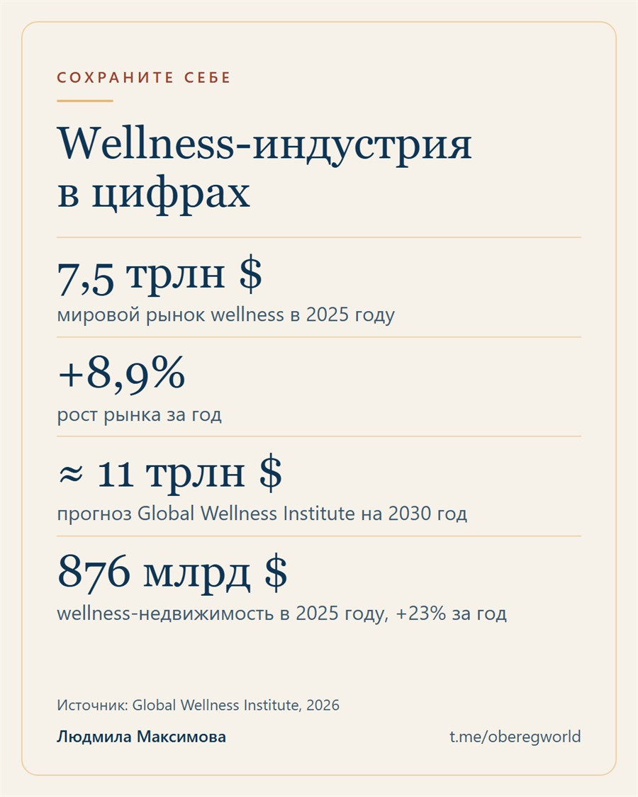

Рынок изнутри
Что такое wellness-индустрия и почему о ней столько говорят
Слово wellness сейчас встречается везде: в отелях, в фитнес-клубах, в рекламе жилых комплексов. Я двадцать лет работаю с недвижимостью в Турции и привыкла смотреть на рынок через цифры. Поэтому разберу без лозунгов, что стоит за этим словом, насколько велика эта индустрия и почему её самый быстрый сектор оказался мне так знаком.

Коротко
Wellness складывается из того, что человек каждый день делает для хорошего самочувствия: как двигается, ест, отдыхает, путешествует, ухаживает за собой и даже в каком доме живёт. По оценке Global Wellness Institute, в 2025 году мировой рынок wellness достиг 7,5 трлн долларов и вырос за год на 8,9%. Быстрее всех в нём растёт wellness-недвижимость.
Wellness простыми словами
За этим словом стоят привычки и решения, которые человек принимает сам, каждый день. Прогулка вместо такси, отпуск у моря вместо марафона встреч, вечер без телефона, дом, где хочется жить, а не только ночевать.
Global Wellness Institute (GWI), исследовательская организация, которая регулярно считает этот рынок, описывает его как отрасли, которые помогают людям встроить такие привычки в повседневную жизнь.
Из чего состоит индустрия
GWI выделяет 11 направлений. Вот те, что ближе всего к обычной жизни:
- физическая активность: фитнес, спорт, йога, прогулки;
- здоровое питание;
- уход за собой и красота;
- wellness-туризм, то есть поездки ради отдыха и хорошего самочувствия;
- спа и термальные источники;
- ментальное благополучие: всё, что помогает справляться со стрессом;
- забота о сотрудниках на работе;
- wellness-недвижимость.
Насколько большой этот рынок
В ноябре 2026 года GWI опубликовал свежий отчёт. Главные цифры:
- в 2025 году мировой рынок wellness оценивается в 7,5 трлн долларов;
- за год он вырос на 8,9%;
- по прогнозу GWI, к 2030 году он приблизится к 11 трлн долларов.
Одна оговорка, без которой я не могу. Рост рынка ничего не говорит о доходе конкретного человека. Это просто картина того, на что люди сегодня тратят время и деньги.

Wellness-недвижимость: самый быстрый сектор
Мне, человеку из недвижимости, этот раздел отчёта показался самым интересным. Wellness-недвижимостью GWI называет дома, кварталы и общественные пространства, которые с самого начала проектируют, строят и обслуживают так, чтобы в них было хорошо жить. Это продуманные места для прогулок, зелень, свет, тишина, общие пространства для спорта и встреч.
Цифры по этому сектору такие:
- в 2025 году рынок wellness-недвижимости оценивается в 876 млрд долларов, годом раньше было 711 млрд;
- за год он вырос на 23%, а мировое строительство в целом всего на 3%;
- к 2030 году GWI ждёт 1,8 трлн долларов.
Я живу у моря и знаю, как сильно место влияет на ритм дня: выйти на прогулку гораздо проще, когда есть куда идти. Похоже, это чувствую не только я.
Что стоит за ростом
Отчёт считает деньги, а я вижу и настроения вокруг. В опросе Russian Business и агентства «Лампа» 2026 года предприниматели чаще всего называли главным мотивом свободу распоряжаться своим временем: так ответили 24%. Время и то, как его проживаешь, сегодня ценят не меньше результата.
Где здесь я
Моё второе направление связано с wellness. Это партнёрский бизнес: приборы для дома и здорового образа жизни. Да, это сетевой бизнес, и я разобрала плюсы и минусы такого дела в отдельной статье.
Пришла я сюда не за модным словом. Мне было важно дело, которое не держит меня в одной стране и связано с темой, которая мне близка: прогулки у моря и свой ритм дня. С привычками у меня, признаюсь, тоже не всё идеально, и об этом я пишу в своём канале.
Интересно, как это выглядит изнутри?
Напишите мне в Telegram или WhatsApp. Я отвечу сама и, если захотите, приглашу на онлайн-встречу на 30–40 минут. А если пока хочется просто присмотреться, загляните в мой Telegram-канал: там я показываю, как живу у моря и строю второе дело.
Источники
- Global Wellness Institute. Global Wellness Economy Monitor 2026. Пресс-релиз, 11.11.2026.
- Global Wellness Institute. Wellness Real Estate Market Reaches $876 Billion, Forecast to Hit $1.8 Trillion by 2030. Пресс-релиз, 12.05.2026.
- Global Wellness Institute. What is the Wellness Economy?
- Retail.ru. 54% предпринимателей столкнулись с падением выручки. Исследование Russian Business и агентства «Лампа», 26.05.2026.